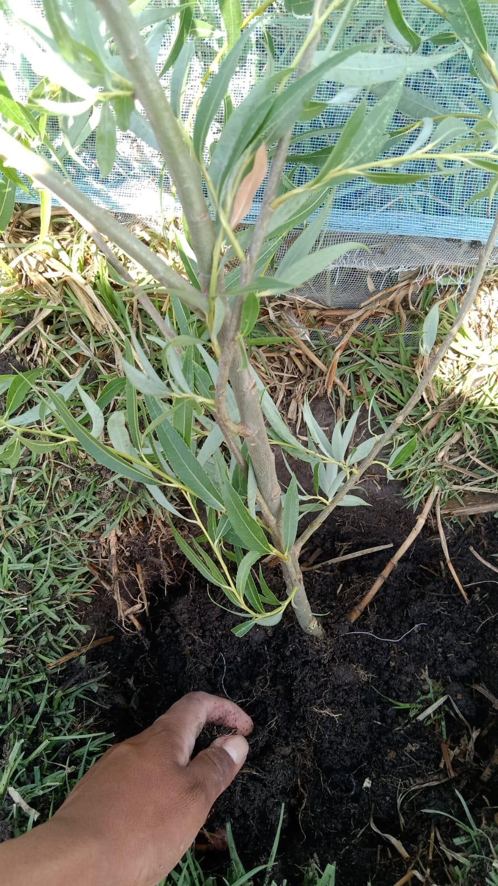

El Colegio de Bachilleres es un plantel que quiere dar aconocer un nuevo conocimiento de plantar arboles para ternerlo en cuenta para saber sobre plantar arboles y cuiadarlos.
Responsable:
Este trabajo se da a conocer sobre los conocimientos de una plantar arbol: Giovani Francisco Crisanto.
Objetivo
el objetivo nos da a conocer que nos cuidemos las plantas o arbloes.
